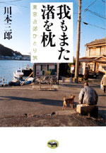

|
|
エッセイ | ||||||
| サウス・トゥ・サウス | |||||||
| 与那原恵 | |||||||
| 四六判 272頁 | |||||||
| 定価1680円（本体1600円） | |||||||
| 4-7949-6642-3 C0095 | |||||||
| 新宿にあった老舗沖縄料理店の名物おばちゃんとの最後の交流を描く「壷屋のおばちゃん」、ヒッピーのコミューンの40年後を訪ねる諏訪之瀬島への旅「海がむすぶもの」、子供の頃から家に居つかない性分だったその理由「私に家はいらない」など、かすかにつながる血縁・地縁をたどりつつ綴る、かけがえのなさと愛おしさに彩られた珠玉のエッセイ集。 | |||||||
|

|
エッセイ | ||||||
| 我もまた渚を枕 東京近郊ひとり旅 |
|||||||
| 川本三郎 | |||||||
| 四六判 272頁 | |||||||
| 定価1995円（本体1900円） | |||||||
| 4-7949-6644-x C0095 | |||||||
| 古き良き町の面影を探し、いざ東京近郊へ。そこには、東京で失われつつある風景と人の暮しがあった。居酒屋で地元の人と語り、銭湯に立ち寄り、横丁をそぞろ歩く。船橋で太宰と荷風の足跡を知る。犬吠埼で新珠三千代映画に思いをはせる。本牧に「オキュパイド・ジャパン」の残り香を感じ……。町歩きの名人による「隠れ里」ひとり旅。 | |||||||
 |
エッセイ | ||||||
| 後には脱兎の如し | |||||||
| 近藤ようこ | |||||||
| 四六判 256頁 | |||||||
| 定価1890円（本体1800円） | |||||||
| 4-7949-6643-1 C0095 | |||||||
| 近藤ようこさんは『ガロ』からスタートし、現代物と時代物を書き分けることのできる希有なマンガ家である。その近藤さんの初めてのエッセイ集。マンガという表現をとる以前の発想や、マンガでは表現できなかった部分を伝える。どんなふうに作品ができるかがわかるメイキングでもある。著者によるイラストとマンガの書き下ろし付き。 | |||||||
| がん | |||||||
| がんと心 | |||||||
| 岸本葉子 内富庸介 | |||||||
| 四六判 208頁 | |||||||
| 定価 1575円（本体1500円） | |||||||
| 4-7949-6638-5 C0047 | |||||||
| 精神腫瘍学の内富医師と岸本葉子さんが、がんとこころの問題についてトコトン話し合った。がんは死の病というイメージは薄れたが、長く過酷な治療、副作用、再発の不安など、精神的に追いつめられることが多い。がんと告げられたらどんな人でも落ち込む。でも、それを乗りこえる方法はある。自分だけで抱え込まず、がんとじょうずに向き合うための対話集。 | |||||||
| 映画 | |||||||
| 植草甚一スクラップ・ブック4 第三回配本 ハリウッドのことを話そう |
|||||||
| 植草甚一 | |||||||
| 四六判 272頁 | |||||||
| 定価1470円（本体1400円） | |||||||
| 4-7949-2564-6 C0374 | |||||||
| ハワード・ホークスの「赤い河」、ジョン・フォードの「リオ・グランデの砦」…一九五二年のハリウッドはスターの王国だった。監督、俳優、脚本家にプロデューサー、大勢の人々が織りなす、映画の都の古き夢、新しい姿を豊富なエピソードで綴る。一九五六年に出版された植草甚一・幻の著作『外国の映画界』も一挙収録。（解説・淀川長治） | |||||||
| エッセイ | |||||||
| 植草甚一スクラップ・ブック10 第三回配本 J・J氏の男子専科 |
|||||||
| 植草甚一 | |||||||
| 四六判 264頁 | |||||||
| 定価1470円（本体1400円） | |||||||
| 4-7949-2570-0 CO370 | |||||||
| ぼくは流行に先行する流行にしか興味がないんだ。J・J氏の卓抜なおしゃれ感覚が選びだした、着るもの、はくもの、使うもの、食べるもの、飲むもの、遊ぶもの。ボクシングやコラージュや切手の話など、「ぼくの街・ぼくの部屋」をいきいきと再現する。植草流、男性に必要なダンディズムへのガイダンス。（解説・虫明亜呂無） | |||||||
| ジャズ | |||||||
| 植草甚一スクラップ・ブック13 第三回配本 バードとかれの仲間たち |
|||||||
| 植草甚一 | |||||||
| 四六判 256頁 | |||||||
| 定価1470円（本体1400円） | |||||||
| 4-7949-2573-5 C0373 | |||||||
| 「バード」ことチャーリー・パーカーの生きざまと死にざま。それにまつわるジャズ・シーンとその時代。ジャンキー、麻薬密売人、ミュージシャンといった、さまざまな個性が織りなすストーリー。評論や批評を超えて自分だけの「空想の場」から投げかけるジャズ・エッセイ。植草さんの「ジャズへの喜び」が溢れる。（解説・久保田二郎） | |||||||